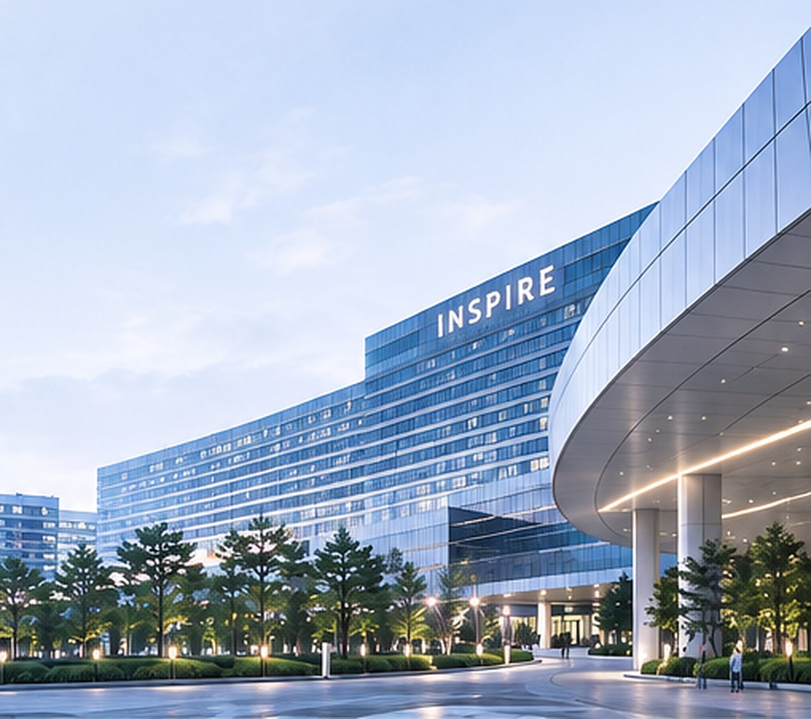

Fly in,
glow out
From your first message to follow-up at home — care designed for patients from abroad.

Designed for
international patients
Multilingual channels
Website in English, Korean and Chinese, with consultation by KakaoTalk, LINE, WhatsApp and WeChat.
Near Incheon Airport
Located inside Inspire Entertainment Resort near Incheon International Airport.
Stay & recover
Recover comfortably while staying at the resort, with the clinic just steps away.
Private & discreet
A private flow from consultation to recovery, away from other guests.
Five steps,
one director
Online consultation
Send photos and your concerns by messenger or the online form.
Plan & schedule
We suggest a consultation date and an estimated stay based on your procedure.
In-person consultation
The director examines you in person and finalises the plan with you.
Surgery
Your procedure, performed with safety as the first priority.
Recovery & follow-up
Check-ups during your stay, and follow-up by messenger after you return home.
What to prepare
- Passport (identification)
- Medical history, current medications and allergies
- Records of any previous surgery
- Clear front and side photos for pre-consultation
Reach us
your way
Scan a QR code with your phone to start a chat with our consultation team.

KakaoTalk
For guests in Korea
LINE
For guests from Japan, Taiwan and Thailand

For guests worldwide

For guests from China
Questions
How long should I stay in Korea?
It depends on the procedure and your recovery. We give you an estimate during the pre-consultation and confirm it after the in-person examination.
Which languages can I consult in?
Please contact us in English, Korean or Chinese. We will let you know the consultation and interpretation options available for your visit.
Can I get follow-up care after returning home?
Yes. You can send photos and questions by messenger, and we will guide you through your recovery.
Start your global consultation
By phone, online form, KakaoTalk, LINE, WhatsApp or WeChat.